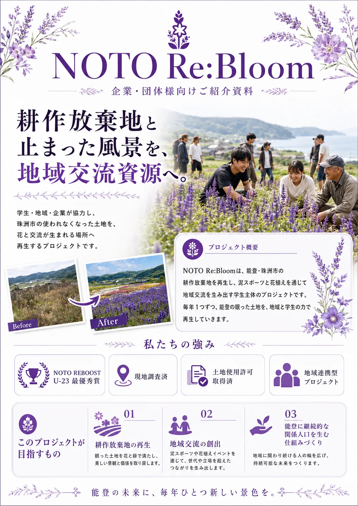

耕作放棄地の増加
高齢化や後継者不足により、手入れが難しい農地が増えています。
Noto / Suzu, Ishikawa
学生・地域・企業が協力し、珠洲市の使われなくなった土地を、花と交流が生まれる場所へ再生するプロジェクトです。

毎年1つずつ、
眠った土地を再生。
農家・地域・学生・企業が
一緒につくる未来。
荒れ地を整えることは、花を植えることだけではない。地域に、新しい人の流れをつくること。
プロジェクトの背景 ↓The challenge
耕作放棄地の増加は、景観の問題だけではありません。地域で顔を合わせる機会や、外から継続的に関わる人の流れも弱まりやすくなります。
NOTO Re:Bloomは、土地の再生を出発点に、世代や立場を超えて人が集う場を育てます。
高齢化や後継者不足により、手入れが難しい農地が増えています。
人口減少や生活環境の変化により、地域内外の交流機会が減っています。
能登の魅力に惹かれても、継続して関わる人や団体はまだ多くありません。
人と経済の循環が弱まり、未来への希望が見えにくくなっています。
How we regenerate
イベントだけで終わらせず、「農地再生 → 地域交流 → 景観資源化」の一連の流れをつくります。
農家・地域の方から相談を受け、再生したい土地と、その土地の背景を知る。
草刈り・重機整備などを通じて、安全に活用できる状態へ戻す。
泥スポーツや花植えを通じ、子ども・住民・学生が交わる時間をつくる。
花畑・撮影スポット・交流拠点として、地域に残る価値へ育てる。
さまざまな立場の人が、同じ土地の未来を一緒に考える。
A continuing project
モデル事業として、土地再生と地域交流の成功事例をつくる。
協力者・協賛企業を広げ、珠洲市内で取り組みを拡大する。
地域ごとの想いをつなぎ、再生の仕組みを能登全体へ展開する。
Partnership
ご協力は、花畑をつくるだけではありません。地域に人の流れをつくり、新しい未来の景色を残すことにつながります。
土地整備、花苗、イベント運営、継続管理に活用します。
重機、資材、苗、備品など、現物でのご協力も歓迎します。
花植えや当日の運営など、社員の皆様の参加も力になります。
情報発信、ご紹介、地域との接点づくりへの協力も歓迎します。
Materials
企業・団体様へのご説明に使える資料を、Web上でもご覧いただけます。
Contact
協賛、資材・重機のご提供、社員参加、広報連携などのご相談を受け付けています。フォームからお送りいただいた内容は、プロジェクト内で一元管理し、担当者よりメールでご返信します。